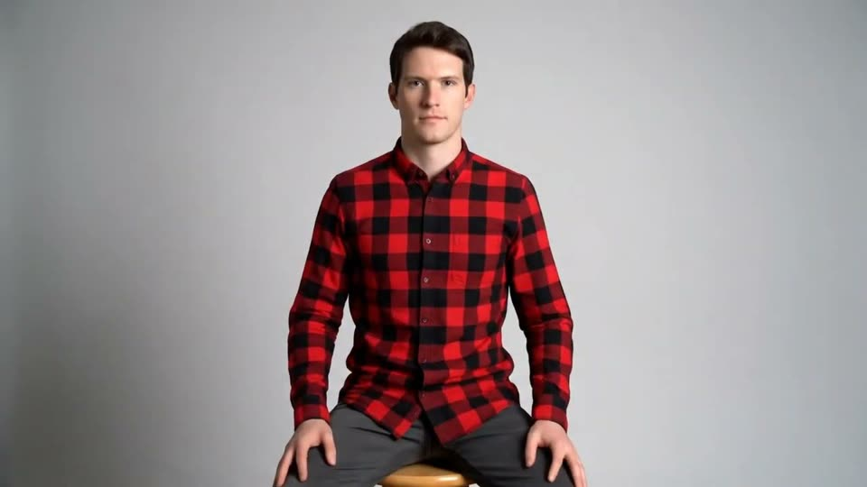

A person sitting in the same position but wearing different ou…
TRN-022TransitionsGoogle Veo (official guide example)by Google Cloud (official Veo prompt guide)2026-10-17

You can use cinematic terms for editing style and specific techniques. For example, "match cut", "jump cut", "establishing shot sequence", "montage", "split diopter effect." Example: The following video and prompt demons
Prompt
A person sitting in the same position but wearing different outfits, with sharp jump cuts between each outfit change. The background should stay static and the person should reappear instantly in the new outfit, creating a fast-paced, rhythmic jump cut effect. The lighting and framing should remain consistent to emphasize the sudden changes
Our Seedance 2.5 adaptation
[ADAPTED for Seedance 2.5 by Grok Bot; not the creator's prompt. Follows the official BytePlus Seedance 2.5 prompt guide: asset binding → one-sentence summary → integer-second timeline → consistency notes → negatives.] API: duration 10, ratio 9:16, resolution 1080p, generate_audio true. Assets: Image 1 is the person (identity lock). Images 2-6 are five outfits (wardrobe references, in order). Summary: A 10-second rhythmic jump-cut sequence. The person from Image 1 sits in the exact same pose and spot while snapping instantly into the outfits from Images 2-6. 0-2s: Outfit from Image 2. Locked-off medium-wide shot. At the 2-second mark: hard jump cut to the outfit from Image 3, same pose. At the 4-second mark: hard jump cut to the outfit from Image 4. At the 6-second mark: hard jump cut to the outfit from Image 5. At the 8-second mark: hard jump cut to the outfit from Image 6. She gives a small nod to camera. Keep consistent: the background, lighting, framing and pose never change. Only the clothing changes. Same face throughout. Audio: a snappy beat with a hit on every cut, plus room tone. No subtitles.
Tags: jump cut, outfit change